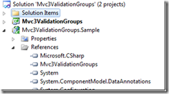
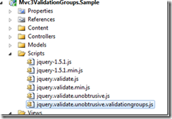
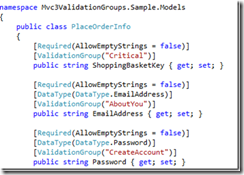
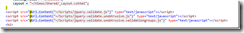
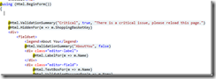
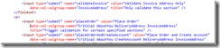
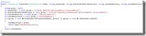
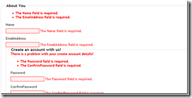

---
title: "Announcing MVC3 Validation Groups"
date: 2012-01-15
lastmod: 2012-01-17
draft: false
comments: true
humbnail: "/coding-gallery"
series: ["project"]
authors: ["martincjarvis"]
---I’ve recently had to organise the validation for long/multipart forms. Ordinarily, you’d divide the form up into smaller models and create a wizard style user journey. But in this case the UI design called for the user to arbitrarily jump back and forth between pages in the wizard and other restrictions meant that we couldn’t persist each sub-page on change. What we needed were validation groups!
As this work involved a bit of the old copy-paste-adapt from the standard MVC code, it’s a bit complicated to go into the fine details of how to replicate the functionality for yourself. So I’ve setup a codeplex project with a reusable library all ready to go! (Of course all the source code is up there as well!)
How to use
- Download the latest release. (Get the latest Example Site as well to see a preconfigured MVC3 Website and example integration)
- Add a reference to ‘McjDevelopment.Mvc3ValidationGroups.dll’ to your MVC3 project
 - Copy ‘jquery.validate.unobtrusive.validationgroups.js’ to your ‘scripts’ folder
 - Decorate your view models with the [ValidatorGroup] attribute specifying the validation groups that that field belongs to (space delimited)
 - Update your view to use ‘jquery.validate.unobtrusive.validationgroups.js’ immediately after ‘jquery.validate.unobtrusive.js’ (or ‘jquery.validate.unobtrusive.min.js’)
 - Update your view to include where you want each groups Validation Summary to appear
 - Amend your ‘Action’ buttons and links to include ‘data-val-valgroup-name’ attribute and specify which validation groups should be triggered by the user clicking on that element
 - Amend you’re controller to check the appropriate validation groups when called. (this implementation shows a common action being called with uses the clicked button name to select the validation group, an alternative is to us JS to dynamically alter the form’s action location)
 - Test validation groups!

{kind=link}
{kind=link}
{kind=link}
{kind=link}
{kind=link}
{kind=link}
{kind=link}
{kind=link}